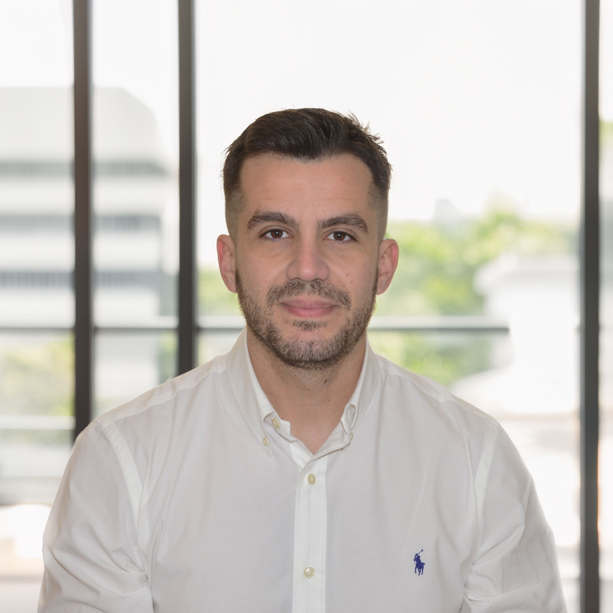
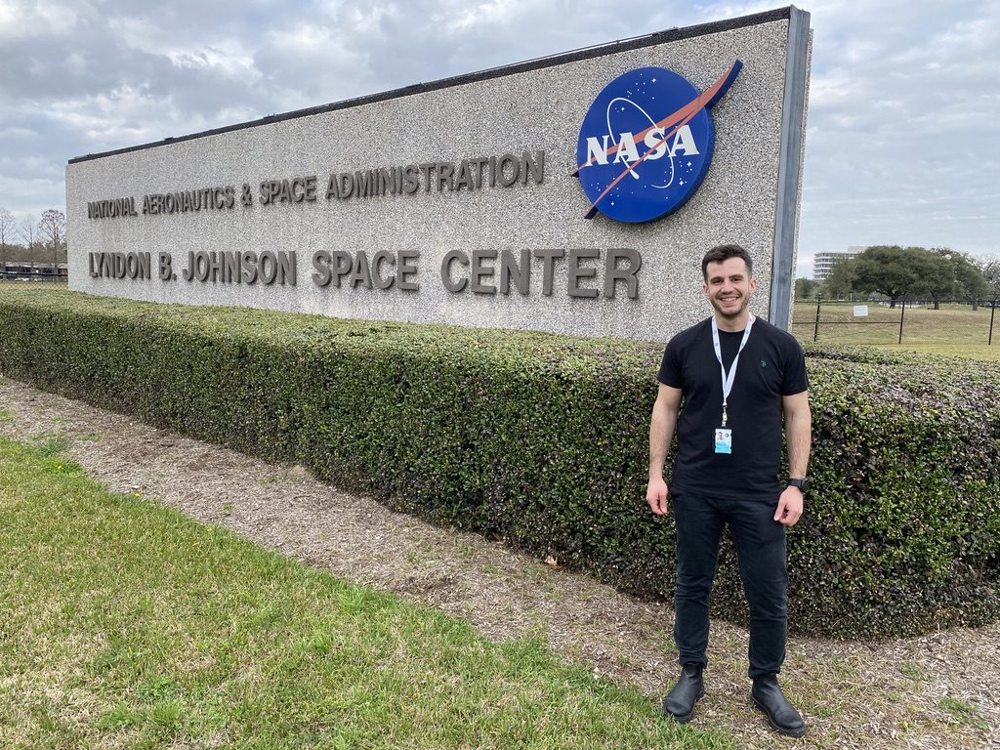
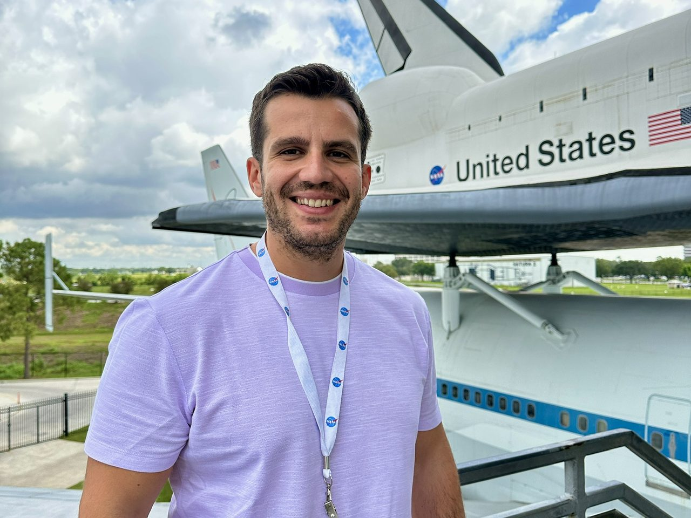
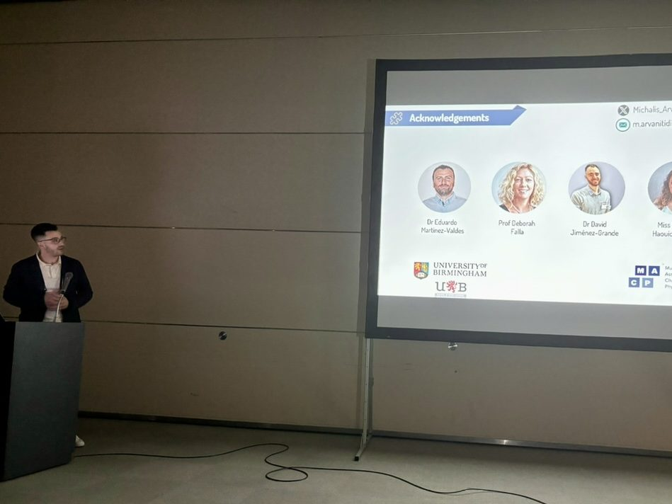
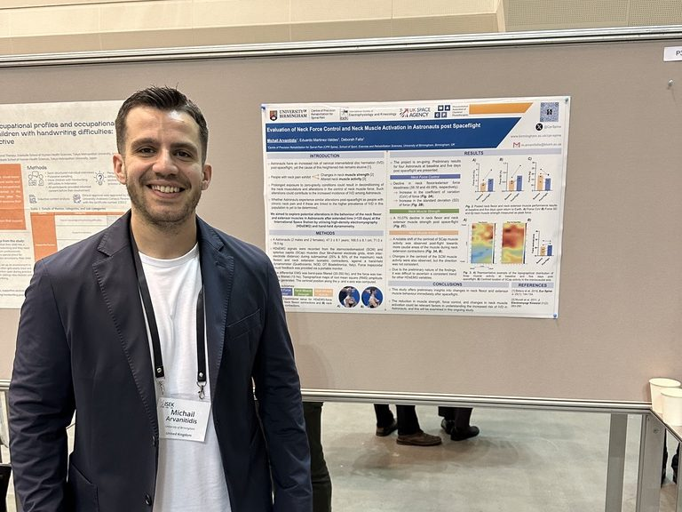
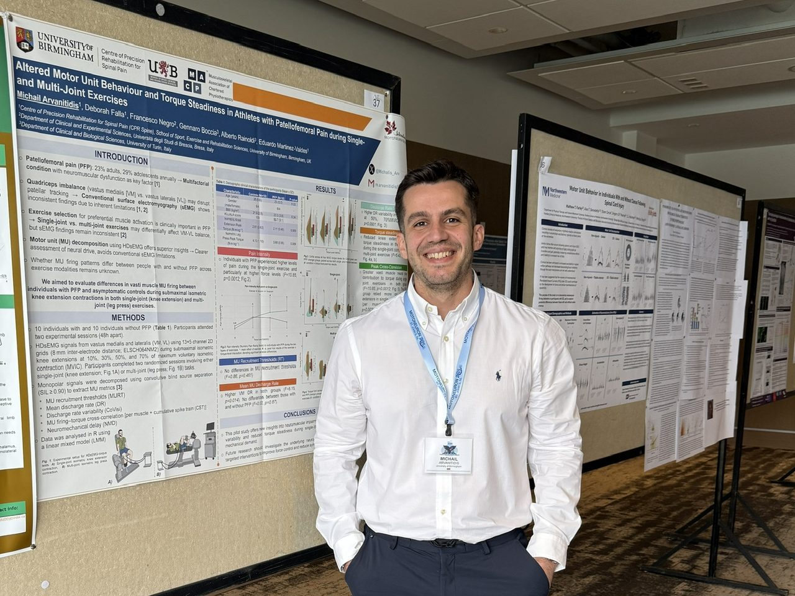
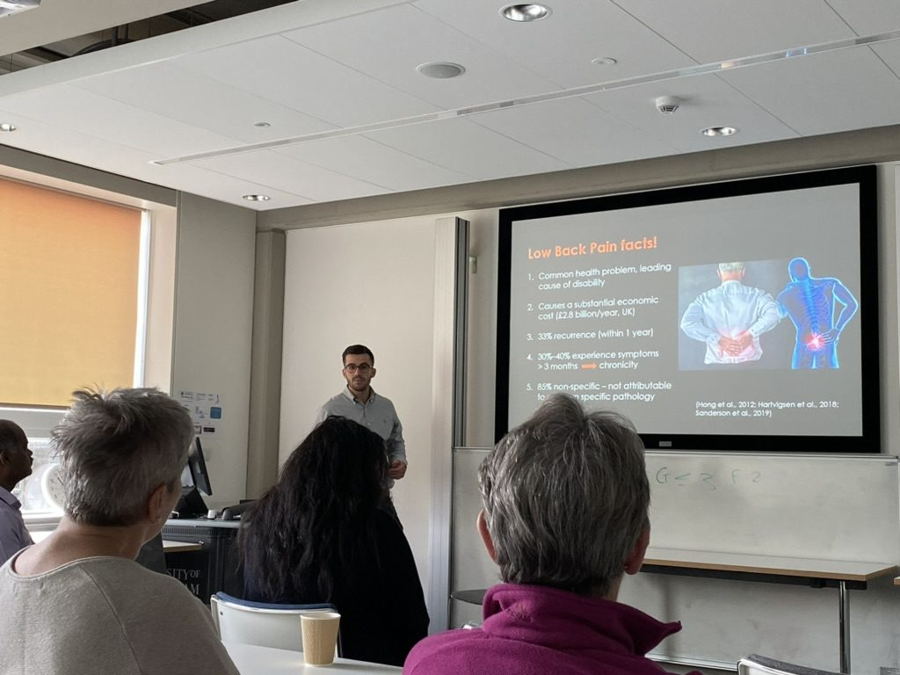

Journal of Applied Physiology · Υπό κρίση
Διαταραχές εξαρτώμενες από το φορτίο στη νευρική ώση του μακρού περονιαίου και στην κωδικοποίηση συχνότητας των κινητικών μονάδων.
Κέντρο Αποκατάστασης Ακριβείας για τον Πόνο στη Σπονδυλική Στήλη (CPR Spine)
Σχολή Αθλητισμού, Άσκησης και Επιστημών Αποκατάστασης
Πανεπιστήμιο του Μπέρμιγχαμ, Ηνωμένο Βασίλειο

Ο Δρ Μιχαήλ Αρβανιτίδης (PT, PhD, MSc, MMACP) είναι Μεταδιδακτορικός Ερευνητής στο Κέντρο Αποκατάστασης Ακριβείας για τον Πόνο στη Σπονδυλική Στήλη (CPR Spine), Σχολή Αθλητισμού, Άσκησης και Επιστημών Αποκατάστασης, Πανεπιστήμιο του Μπέρμιγχαμ, Ηνωμένο Βασίλειο. Η τρέχουσα έρευνά του εξετάζει τις προσαρμογές της αυχενικής μοίρας της σπονδυλικής στήλης και των αυχενικών μυών σε αστροναύτες της NASA μετά από διαστημική πτήση, με στόχο τη βελτίωση της υγείας των αστροναυτών σε μελλοντικές αποστολές. Τα κύρια ερευνητικά του ενδιαφέροντα αφορούν τις κινητικές προσαρμογές σε πληθυσμούς με πόνο ή αυξημένη ευαλωτότητα.


Έργο: Cervical in Space — προσαρμογές της αυχενικής μοίρας της σπονδυλικής στήλης και των μυών μετά από διαστημική πτήση και σχέση με τον κίνδυνο δισκοκήλης. Επιστημονική επόπτρια: Καθ. Deborah Falla.
Συλλογή, ανάλυση και διάχυση δεδομένων για το πρόγραμμα Cervical in Space, παράλληλα με τις διδακτορικές σπουδές.
Πρωτόκολλα αξιολόγησης δύναμης αυχένα και νευρομυϊκής λειτουργίας αστροναυτών· ανάπτυξη ροής ανάλυσης HD-sEMG και δυναμομέτρησης.
Κλινική πρακτική μερικής απασχόλησης. Αξιολόγηση και αντιμετώπιση σύνθετων περιστατικών σπονδυλικής στήλης και μυοσκελετικού συστήματος. Εργοδότης: Δρ David W. Evans.
Μυοσκελετική και μετεγχειρητική αποκατάσταση σε εξωτερικούς ασθενείς.
Έλεγχος της δύναμης των μυών του κορμού στη χρόνια οσφυαλγία, με ηλεκτρομυογραφία επιφανείας υψηλής πυκνότητας και ισοκινητική δυναμομέτρηση. Επιβλέποντες: Δρ Eduardo Martinez-Valdes, Καθ. Deborah Falla.
Πρόγραμμα πιστοποιημένο από το MMACP. Επιβλέποντες: Δρ Eduardo Martinez-Valdes, Καθ. Deborah Falla.
Επιβλέπων: Καθ. Γεώργιος Γιόφτσος. Τιμητική υποτροφία, Ίδρυμα Κρατικών Υποτροφιών (2011–12).
Διαταραχές εξαρτώμενες από το φορτίο στη νευρική ώση του μακρού περονιαίου και στην κωδικοποίηση συχνότητας των κινητικών μονάδων.
Παρόμοια κλινική βελτίωση, αλλά διακριτές νευρομηχανικές προσαρμογές μεταξύ των δύο μορφών προπόνησης.
Μεγαλύτερη αντοχή στην κόπωση των εκτεινόντων του κορμού σε ηλικιωμένους, παρά τη χαμηλότερη σταθερότητα ροπής.
Μη επεμβατική προσέγγιση με HD-sEMG για την εκτίμηση του μεγέθους των μυϊκών ινών του ορθωτήρα της ράχης.
Πρώτη σύνθεση δεδομένων που δείχνει ότι η ειδική άσκηση αυχένα μπορεί να επιφέρει δομικές προσαρμογές στους αυχενικούς μυς.
Η βιοανάδραση HD-sEMG με επαυξημένη πραγματικότητα μετέβαλε τη χωρική ενεργοποίηση του μυός και βελτίωσε την αντοχή των εκτεινόντων του γόνατος κατά 27%.
Η ταυτόχρονη καταγραφή HD-sEMG και υπερηχογραφίας με διαφανή ηλεκτρόδια ανέδειξε νευρομηχανική σύζευξη εξαρτώμενη από το είδος της σύσπασης.
Διαταραχές του ελέγχου δύναμης του κορμού με την ηλικία, με διακριτά πρότυπα HD-sEMG.
Επικαιροποιημένα δεδομένα διαγνωστικής ακρίβειας, χρήσιμα για τεκμηριωμένη κλινική λήψη αποφάσεων.
Πρώτη τεκμηρίωση μεταβολών των κινητικών μονάδων ανάλογα με το φορτίο και τον μυ στην τενοντοπάθεια του Αχιλλείου.
Προσαρμοστική ανακατανομή της δραστηριότητας των αυχενικών μυών κατά τον πειραματικά προκλητό μυϊκό πόνο.
Η σταθερότητα της δύναμης διαταράσσεται στον μυοσκελετικό πόνο — πιθανός στόχος αποκατάστασης.
Νέα δεδομένα για τις νευρομυϊκές διαταραχές στον επιγονατιδομηριαίο πόνο κατά την άσκηση μίας άρθρωσης.
Το NOD αποτελεί έγκυρη, αξιόπιστη και φορητή εναλλακτική της εργαστηριακής δυναμομέτρησης.
Ανέδειξε τοπικές διαφορές στη δραστηριότητα του οσφυϊκού ορθωτήρα σε άτομα με πόνο στη σπονδυλική στήλη.
Θα καθοδηγήσει τον σχεδιασμό αντίμετρων για τη μείωση του πόνου και του κινδύνου τραυματισμού της σπονδυλικής στήλης σε αστροναύτες.
Πρώτα δεδομένα για διαφορές της χωρικής ενεργοποίησης των οσφυϊκών μυών με την ηλικία υπό συνθήκες κόπωσης.
Πρώτη μετα-ανάλυση που δείχνει μειωμένη αντοχή των μυών του κορμού σε ηλικιωμένους.
Πρώτη δοκιμή προπόνησης με οπτική ανατροφοδότηση βάσει ροπής στην τενοντοπάθεια του επιγονατιδικού τένοντα.
Πρώτη μελέτη για την επίδραση του καθυστερημένου μυϊκού πόνου στις σχέσεις HD-sEMG–ροπής του κορμού και στην οσφυϊκή κινηματική.
Πρώτα δεδομένα για μειωμένη σταθερότητα ροπής και μεταβολή των σχέσεων HD-sEMG–ροπής σε δυναμικές συσπάσεις του κορμού στη χρόνια οσφυαλγία.
Νέα σύνδεση μεταξύ της πυροδότησης των κινητικών μονάδων και των μηχανικών ιδιοτήτων του Αχιλλείου τένοντα.
Νέοι χωρικοί δείκτες HD-sEMG που χαρακτηρίζουν την κόπωση και προβλέπουν τη μυϊκή αντοχή.
Νέα προσέγγιση HD-sEMG που ξεπερνά τις δυσκολίες αποσύνθεσης στον οσφυϊκό ορθωτήρα.
Διεθνές ερευνητικό έργο για τις προσαρμογές της αυχενικής μοίρας μετά από διαστημική πτήση και τις στρατηγικές πρόληψης για αστροναύτες.
Μεταβολή —πιθανώς λιγότερο αποδοτική— της ενεργοποίησης του οσφυϊκού ορθωτήρα κατά τη δυναμική κόπωση στη χρόνια οσφυαλγία.
Η HD-sEMG διακρίνει τον βιομηχανικό κίνδυνο νωρίτερα και με μεγαλύτερη ακρίβεια από τη συμβατική sEMG.
Ο πόνος επηρεάζει διαφορετικά τη συμπεριφορά των κινητικών μονάδων ανάλογα με την ταχύτητα σύσπασης.
Πρώτη μελέτη που εξέτασε αν είναι δυνατή η επιλεκτική τροποποίηση της δραστηριότητας του τραπεζοειδούς με οπτική ανατροφοδότηση HD-sEMG.
Παρουσιάσεις κατόπιν αξιολόγησης. Ο αστερίσκος (*) δηλώνει τον παρουσιαστή.



